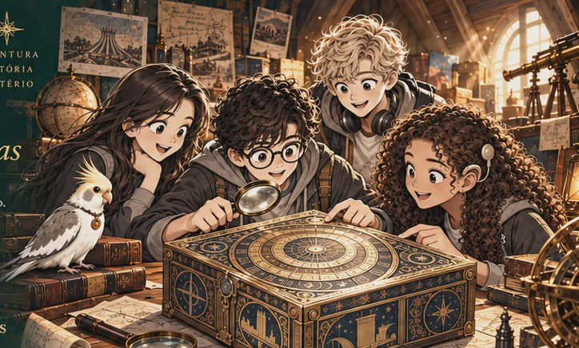

ILUSTRAÇÃO DO UNIVERSO DO LIVRO
PRIMEIRO TÍTULO • EM PREPARAÇÃO
Os Detetives do Tempo O Enigma das Duas Guerras
Quatro jovens investigadores, uma calopsita e documentos de duas guerras mundiais. Uma aventura em que cada pista convida o leitor a pensar.
Indicado a partir de 12 anos. Sem data de lançamento ou pré-venda anunciadas.
Conhecer o livro